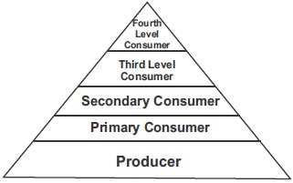

SOLAR RADIATION:
ITS INTAKE AND LOSS AT THE EARTH SURFACE
The sun is the ultimate source of energy for the ecosystem. Of the solar energy that
reaches the earth, only a fraction if it is captured for photosynthesis. The rest of the
energy are lost in transpiration, evaporation of water bodies in the environment,
other heat activities and reflection or absorption.
Energy in the Biosphere: the biosphere is a part of the atmosphere where life is
sustained. The biosphere thus consists of a large ecosystem. Living things require
energy for their metabolic activities (anabolic and catabolic process). About 1 to
10% of the solar energy that reaches the earth can be available for the primary
producers (autotrophs) for photosynthesis in most ecosystems. Not all the
available energy is utilized for photosynthesis as energy is lost in the process.
Light energy is transformed to chemical energy in the plant which is fed during
photosynthesis. The plant uses about 30% of the energy in this food for its own
metabolic activities. The rest (or net) is retained or stored as chemical energy in the
plant that will be available for the next tropic level in the food chain i.e. the primary
consumers. This level in the food chain is the primary consumers. This available
food is called net food production. The rate at which primary producers
manufacture food per unit area per unit time is called gross primary productivity of
the ecosystem. After about 30% of it is utilized for the plants metabolic activities
the remainder that is stored is called the net primary productivity.
Primary consumers which feed on the primary producers do not feed on all the
NPP of the primary producers. The ecosystem of it is broken down by
decomposers when the plant dies. Thus much of the energy is lost before being
passed on to the primary consumer.
The primary consumer in its own case lose much of the energy it gets from the
primary producer in its own metabolic activities and other heat energy loses
leaving a very smaller energy stored or available for the next trophic level (the
secondary consumer).
This can be illustrated as follows, taking that only about 10% of the
energy an organism takes in is stored in the tissue of that organism. Therefore,
when a primary consumer such as a mouse eats grass, it stores about 10% of the
energy available from the grass. When a secondary consumer such as a snake eats
the mouse, its stores only about 10% of the mouse energy which is equivalent to
1% of the grass energy (or NPP). When a tertiary consumer like a Hawk eats the
snake, the Hawk stores only 10% of the snake energy or 0.1% of the grass energy.
Such energy transfer in a food chain can be illustrated as an energy pyramid. In the
energy pyramid, the producers contain most of the energy in the pyramid, the
primary consumers have less and the secondary consumers have even much less
and the tertiary consumers have the least.
LAWS OF THERMODYNAMICS
The Laws of thermodynamics can be used to explain energy lose in the Biosphere.
The transformation of energy from light to heat and chemical energies conform to
the 1st law of thermodynamics which states that energy can neither be created
nor destroyed but can be converted (or transformed) from one form to another.
Moreover, during energy transformation in the biosphere, for instance, from
chemical to mechanical for movement. The process may not be complete or
efficient as some energy may be used to overcome other forces on the system and
nd may be given off as heat energy. This is also in the line with the 2 law of
thermodynamics. It states that the energy transformations which occur during
work are never completely efficient; some energy must escape as heat energy.
GENERAL EXERCISE
Teacher's attention is required for this exercise
1.‘The ultimate source of energy for the ecosystem is the
2. Solar energy can be lost in form of
and
before even being utilized for photosynthesis by green plants?
3. Energy stored in living cells is called
energy?
4. Living cells obtain energy from food through the process of
5. In a functioning ecosystem, a
level is said to exist whenever there is transfer in a food chain or food web
6. The laws of
can be used to explain energy loses in the biosphere within the ecosystem
7. A secondary consumer stores only about 10%of the energy of the primary consumer which is equivalent to
percent of the energy of the producer
8. Energy transfer in a food chain can be graphically illustrated using
9. Energy transformation in a food chain is noted to be inefficient due to energy losses in form of heat etc.. this is in line
with the
law of
10. In an energy pyramid, most of the energy is contained in the
EXPRESSION EXERCISE
Explain photosynthesis as an anabolic process
State the laws of thermodynamics
Explain energy transfer and energy loss in a food chain using the laws of thermodynamics
Diagram of energy pyramid

Explain why the third order consumers are having the least
energy in the energy pyramid shown above
What percentage energy of the producer may likely be available for transfer to the primary consumer.
PRACTICAL ACTIVITIES
Below is a food chain:
Green plants(160)
↓
Herbivorous plants (50)
↓
Carnivorous animals (16)
1 (i). Give practical explanation to the decrease in number of organism along the chain
Use the chain to draw an energy pyramid
Explain the decrease in energy along the food chain from the producers to secondary consumers.